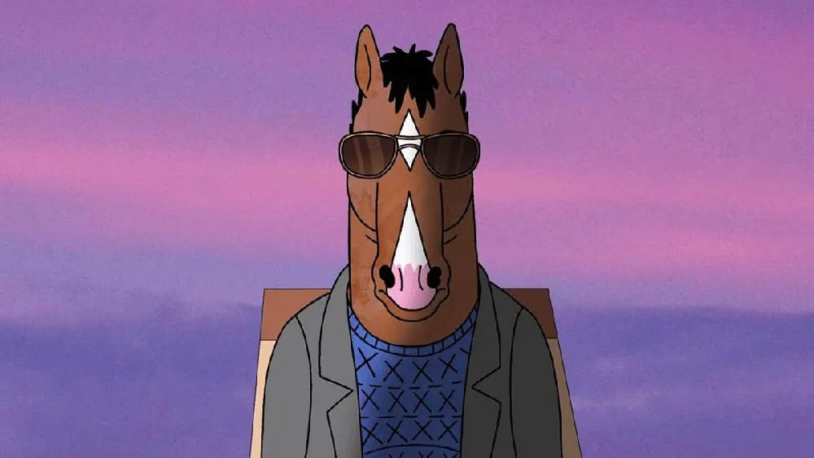

About Bojack Horseman
Bojack Horseman is a washed-up 90s sitcom actor dealing with depression, alcholism, and self-destructive behavior living in Los Angeles. He serves as the "protaganist" of the series.

Princess Carolyn and Bojack Horseman
Bojack’s characteristics
- He’s mean
- He’s washed up
- He’s constantly living in the past
- He continuosly puts others beneath himself to get what he wants